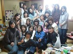

１日目の金曜日も、大勢の布馬鹿軍団が押し寄せて大賑わいだった けど、２日目の土曜日は予定人数３０人・・・ドヒャー！！
ホステス役のやよいちゃんは、自宅の床が抜けないかドキドキ。
私とがあ ちゃんは、やよいちゃんちに入った瞬間から生き別れ状態にならないか心配。
ちゅんみちゃんは、早くも食べ物の事で・・・いや、キルトの事でアタマ がいっぱい。（絶対食べ物の事考えていたに違いないけど）
１１時に待ち合わせの予定が、前日からメイド役やっているｍｉｋｉちゃん・ ｋａｏｒｉちゃんコンビから、
『なるべく早く来て〜』
と。
可愛い子ちゃんに頼まれると、嫌とは言えないスケベオ ヤジの私。
すぐにがあちゃんに連絡して、１０時に変更♪
朝６時半に起きてそーっとお布団から出ると・・・ギョッ！
夫、も う目を覚ましてるやん。
夫：『足が痛いの〜 １週間はるちんのために頑張って働いてん。
ゆうべ足揉んでくれんかったから、 足が痛いの〜』
と、クルッと素早くうつぶせになり、足をバタつかせてアピール。
あのぉ〜、ワタクシ、時間無いねんけどぉ・・・
夫： 『足だるい〜足痛い〜歩かれへん。』
しゃーないなぁ〜。
今日は夫を一人ぼっちで置いて遊びに行くんだもんネ。
いつも通り 足をモミモミモミモミ。
でもお礼に、最寄り駅まで車で送ってくれました♪
歩いても５分で行ける駅やけど（爆）
途中があ ちゃんに、オシャレな街・青山でプレゼント用のアレンジメントを買ってきてもらい、朝からハイテンション３人組でレッツゴー♪
このお花のアレンジ メント、めちゃオシャレで、やよいちゃんも大感激☆
さすが、があちゃん〜！センスあるわ〜〜
土曜日行った人、気付いていたかな？
が あちゃんの首からぶら下がっていたオシャレなネックレス２組は、があちゃんの手作りなんだよ〜
パッチも、布小物も、ビーズも何でも上手な、さりげ ないおシャレさん。でも食いしん坊だけど（笑）
１０時半頃到着すると・・・前日から宿泊しているメイド２人と、ハマの料理人と、広島のひ みちゃんが♪
ひみちゃーん☆会いたかったよぉ〜と、お得意の強烈抱擁。
嬉しくてチューしたくなったけど、いきなりド変態ぶりを見 せ付けるのはアレなんで・・・ぐっと我慢。
しかし・・・ひみちゃんもｋａｏｒｉちゃん同様、背が高いの！
なので、前日の悪夢再 び〜
そう、抱擁の時、思いっきり背伸びして何度も抱きついちゃったもんだから、ワタクシのプルルンふくらはぎは、こむら返り寸前よ！
お いおい、もっと中腰にならんかいっ！と思いながら、さりげなーくひみちゃんの細い肩にワタクシの体重を３割ほどかけ・・・ニヤリ。
ひみちゃんに気 付かれないように強制的に中腰状態にさせ、グワシッ☆
ウム。満足じゃ。
満足したら早速こき使い〜
『ひみちゃー ん、アテのにゅうにゅう（牛乳）冷蔵庫入れといて』
知ってる人は知っている。知らない人は覚えてね♪
アタクシ、身の回りのもの何 でも人にやってもらうのが得意なのぉ〜
アレ取って、コレ持って、ソレ置いといて・・・現在被害者急増中。
一番の被害者は・・・たぶん雪熊 ちゃんやねぇ。
今までのお買い物ツアーで荷物いっぱい持ってもらったり、片付けてもらったりしてたもんネ。
ありがとうね〜これからもお世 話ヨロシクネ。
さてさて、皆が来る前にちょっとショップを覗くと・・・早くも布漁りしているちゅんみちゃん！
『アタシ さー、昨日もビックリするほど買ったんだよね。今日も見ると欲しくなっちゃってぇ〜』
全くもうっ、ちゅんみちゃんったら〜と笑いながら隣 を見ると、いつも冷静沈着のがあちゃんまでも、もういくつも握り締めてるし！
メイド２人・ハマの料理人・半纏ひみちゃんまでも、ゆうべ夜 遅くまで布発掘に夢中だったとか。
あ、ちなみに、なぜ半纏ひみちゃんかというとネ、私が体調悪くて死んでた時、ひみちゃんったらグレーのフワフワ 半纏姿の写真を送ってくれたの。
これがまた可愛いんだ〜☆ひみちゃんの半纏姿で元気になったよ。
みんなすごいねぇ〜♪
が あちゃんたちの第一弾のお買い物が済み、早めのお昼を食べて居ると・・・来たよ来たよ！！
続々と布馬鹿軍団たちがっ！
透明感溢れ るフレッシュライムなsatopengちゃん
北の僻地のパン職人・biankiちゃん＆チビ鉄・たっくん
Ｋ子ちゃんのカ ントリードール時代からの仲間で、とってもキュートな文化人形を作られるcocoさん
フワフワヘアーに陶器のような白い肌が眩しいお人形 のようななおみちゃん
実直でさりげない気遣いがにくいぜこの野郎♪なパッチ職人・Ｔｏｋｉさん
好奇心旺盛で笑顔が可愛 い！フィードサックマニアなゆっぴーちゃん
フリフリメイド服で、オムレツにＬＯＶＥって書いて食べさせてもらいたい・萌え系ひろろちゃん
透 き通る色白美人で何故か毒舌、ついついいじめたくなるウサギなｋｕｍａｋｕｍａちゃん
おっとりとしたスラリスレンダーモデル、時々楽しい 毒舌を吐くｍａｒｕちゃん
ビックリするほど足が長くスタイル抜群、独創的なキルト職人・ＳＮＯＷちゃん
二人目妊娠中でも キレイなママ、キルティング師匠・ｍｉｙｕちゃん＆可愛いことちゃん
ラブリー刺しゅうアップリケ職人、グレーの半纏姿が最高なひみちゃん
今 回最年少・キラキラ輝く２０代のプリティーママ（でも田舎もんよ〜ウハハ）アキちゃん
初めまして＆お久しぶり〜な布馬鹿ちゃんた ちは以上かな。
そして史上最強な凄腕布ハンターたち・・・
凄腕布ハンターの大ボス、歩く布図鑑・可愛い布のためなら地の 果てまでも行くわよ〜なＫ子ちゃん
自画自賛でっかいもんクラブ副会長兼放置クラブ会長・男前息子が羨ましいぃ〜食いしん坊ｄｏｔちゃん
ハ マの料理人はクンクンニオイフェチ、ちっこいもん＆放置クラブ副会長Ｈｉｓａちゃん
ベビーフェイスなビン布マニア、可愛い音速キルト職人 だけど中身はたぶん男（爆）そのギャップがたまらない雪熊ちゃん
悩殺セクシーボデーに目が釘付け！いつも食べ物に全力投球・食いちろりん ちゅんみちゃん
歩く東京路線図・かゆい所に手が届くプリ尻食いしん坊があちゃん
コサージュの代わりにカピカピご飯を胸元 に付けて大はしゃぎ♪将来の介護が恐ろしいぃ〜我らがアイドル（にはちとキツイが）やよいちゃん
今回やっと皆に会えたネ〜美しき爆縫いキ ルター、可愛いアニメ声に全員ＫＯ！Ｓｅｒａｐｉちゃん
そして・・・
今回、２日間に渡ってショップのお手伝いと、やよい ちゃんの介護・・・あ、違った。やよいちゃんちのメイド役をやってくれた２人を忘れちゃいけないよネ♪
可愛い顔してオトボケ発言連発！ ツッコミどころ満載の永遠のアイドル、でもやっぱり正体は完全な男なｍｉｋｉちゃん
盛岡の田舎もんの正体はオシャレなスレンダー美女！情 にもろくて気ぃ遣い可愛いもん作らせたらニッポンイチのｋａｏｒｉちゃん
えーっと、紹介漏れはないかな？
一度に こんなにたくさんの個性的な生物が集まるなんて〜
人間観察大好きなアタクシはすごいウハウハ大興奮！
金曜日のメンバーも良いサンプルいっ ぱいおったしぃ〜♪
みんなそれぞれ住んでるところも、生活環境も全然違うのに、
布が好き☆キルトが好き☆☆
た だそれだけなのに・・・ねぇ〜
改めて、今回自宅を開放してくれ、夜な夜な内職に励んで皆を大感激させてくれたやよいちゃん・パパ、ありが とう！
素敵な企画を立ててリードしてくれたＫ子ちゃん・ひみちゃんありがとう！
で・・・知ってた？
アテクシ、実 はどちらの企画にも参加して無かったって事。
なので、２日間部屋の片隅で小さくなって人間観察に勤しんだわ。
来年は両方企画メンバーなの で、堂々とウハウハするわよ〜〜

↑まるで修学旅行な集合写真。
アテクシ、ｋａｏｒｉちゃん とイチャイチャしながら撮ってもらったんだけど・・・
ｋａｏｒｉちゃん、ワシの顔に思いっきりかぶっとるやんっ！
もしか してラマの祟りかしらん・・・
えー、自分のカメラ以外の集合写真は、私とｋａｏｒｉちゃんは完全なセクハラオヤジになってまーす♪
ア ハハーン☆
【日記の最新記事】


お店のレジ後ろで。。。
お客さんに変な人と思われたか も。。。
ほんと、楽しかったよねぇ〜
まだ、余韻にひたっています。
食いちろりんで、（爆）
もうみんなのご紹介楽しすぎだ わ。
今月も後2回東京に行きます。
時間あったら遊んでねぇ〜〜
こんなにたくさんの方とお会いしてたんだね！
こ の集合写真は私も宝物だよ〜★
でも心残りが一つ・・・
はるたんのビン布が見つからなかったこと〜！！
結局見つからなかっ たのかな？？
見つけたらお持ち帰り決定だったのに(*≧m≦*)
やよいちゃんに見つけてもらって画像送ってもらわねば(*≧▽≦*)
さすが、文豪はるたん！もう、にやにやが止まらない〜。
きっ とみんなもそうよね〜♪
があちゃんのネックレス、やっぱり、手づくりだったんだ〜！
聞こうかどうしようか、迷ったんだよね・・・ 初対面だし、それ、手づくりですか？の一言が言えなかった・・・うぅ、後悔・・・
修学旅行全体写真(？！)で私のお隣ががあちゃんなんだけど、控 えめなチラリとお顔を出しているがあちゃんのお人柄にフォーリンラブしちゃった。
集合写真、メールで送るねって言っておきながら、連絡先を聞かな いで帰ってきてしまったの〜。はるたんなら知っているかな〜。
お香、ありがとう。あれから、毎日焚いています。すっごくいいね〜。
に おいはもちろんのこと、つまんですぐ捨てられるのがいいわ！
本当にありがとう！！
先日もお邪魔させてい ただいたやすりーです♪
待ってました！はるたんレポ2日目！！！
最高でーす(@^▽^@)/
おともだちのご紹介超楽しいです ♪♪♪
いつかお逢いできたらわたしの紹介もぜひお願いしたいです。なんて(//▽//)照れ照れ。。。
レポ、とっても楽しかったです。
にゃんきちはお会いしたことも無い方 々のことなのに、まるでお友達みたいに感じちゃうほどの親近感あふれるレポ！
だからはるたんのブログって大好きだわ（＾＾）
バー のお花も沢山咲いてきたんですね。
こちらもリズミカルな雰囲気で楽しみです♪
もう〜〜！はるたんったら面白すぎ！！
わたしゃ北の僻地のパン職人なんかい？
ぶ ははは〜！！
みんなの個性をちゃんとつかんでてはるたんの人間観察すごいわ！
とっても楽しい〜〜。
それにしても・・・。
は るたんに会えて本当にうれしかったじょ〜。
ハグハグして、すっごくホッとしたのはなぜだろう？(*´∇｀*)うふ♪.*:・'゜
大好きだ よ〜。〈〃＾∀＾〃）ェﾍﾍ
次回は是非はるたんちにお泊りさせてくれ〜ぃ！
もうね、帰ってきてからも、みんなのブログを見せて もらって余韻に浸りまくり〜。
ああ〜！！今からでももう一回行きたい！！
↓お花咲いてきたね〜。
楽しみだ よ〜〜。
みんなにパワーいっぱい貰ったので私も頑張るじょ〜。
はるたん、他のダレよりも存在感にあったと思ってるのは
私 だけとちゃうハズ！！
ﾈｯ(*ﾟ▽ﾟ)(ﾟ▽ﾟ*)ﾈｯ
そーそー！
私の顔、はるたんにかぶりまくってる・・・
し かも私のカメラで撮ってもらったのん、
私不気味なくらいな笑顔やった・・・ひぃ。
間違いなくラマちゃんの祟りやで。
で、セクハラ 写真はダレのとこへ行ったんかいな？
はるたんってば、楽しい文章書くね！
あはは〜。
だんなさんに今も尽くしてるはる たん。
マッサージなんて、だんなくんにするよりもされたいよ〜私。。。
私。。。色白じゃないよ〜〜。
え？毒舌？うっそ〜。
は るたんてば、一番知り合いが多かったんじゃない？とても輝いていたわ。
隅で小さく？？え？？（・３・）エェー
第一弾から大爆笑だよ〜お部屋で一人。かなり怪しいかも。だから、はるたん、ここに 来て一緒に笑って〜
あらぁ〜そうだったの？？あまりに舞い上がっちゃって強制的に中腰にさせられたのも気づかなかったよ〜（笑）あの、あ んまり気がきかないけど、言われたことはちゃんとこなす真面目なひみちゃんなので（うそうそ！！）何なりと言いつけてね〜♪
もっともっと はるたんを独り占めしたかったな〜今度はもっといっぱいお話できるといいな♪
↑では、お人形なんて・・嬉しい♪（何人形だろ う？笑）実は、私、食べるの大好き☆「食いしん坊万歳」です(^^)v
とっても優しくて、楽しいはるたん・・ファンになっちゃったよ♪たくさん お話したいです！ これからもよろしくお願いします♪
楽しそう!!! 羨ましい〜〜〜〜っ。
大好 きなキルトを語れるリアルな時間楽しめるのって
とぉ〜っても羨ましいですぅ(T∇T)
みなさんステキで楽しさが伝わるショットです d(>_< )ＧＯＯＤ
おもろすぎる(≧ー≦)///
さすが人間観察セクハラオヤジ (爆)
どれもこれもマトをえすぎてるぅ〜〜!!!
すべてを永久保存したいわ。
中身はたぶん男!!ブハハッ!!!
食 いちろりんにはリトル爆笑！これから流行らすそうな(笑)
フレッシュライムなsatopengちゃん、なんてうまいこと言うのはるたんてば。
ひ ろろちゃんには私もオムレツにLOVEって書いてもらいたいわん(*^^*)
あ〜〜んやっぱ全部永久保存♪